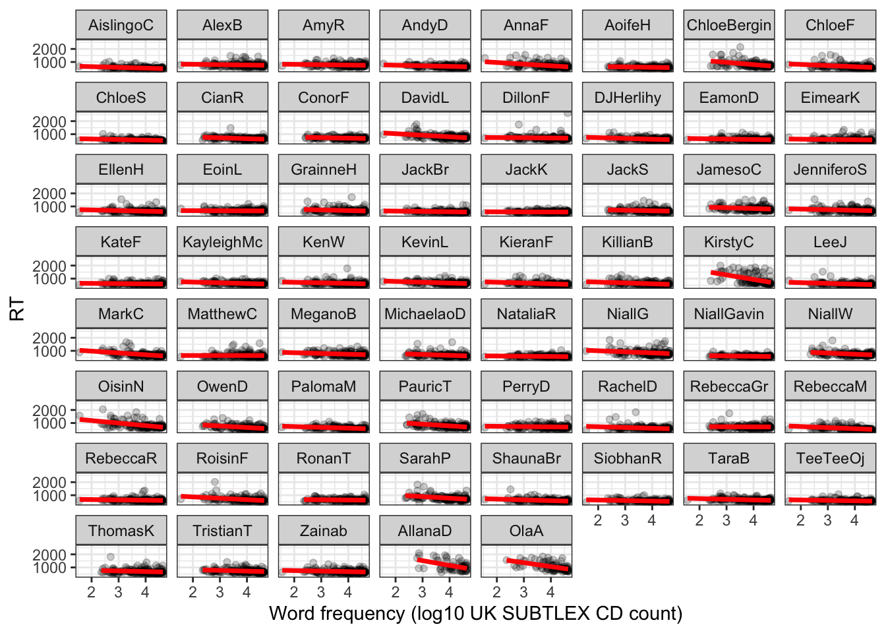
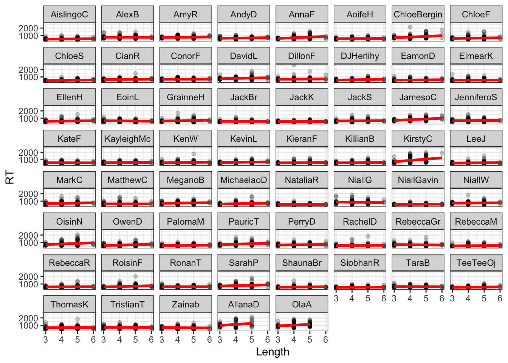
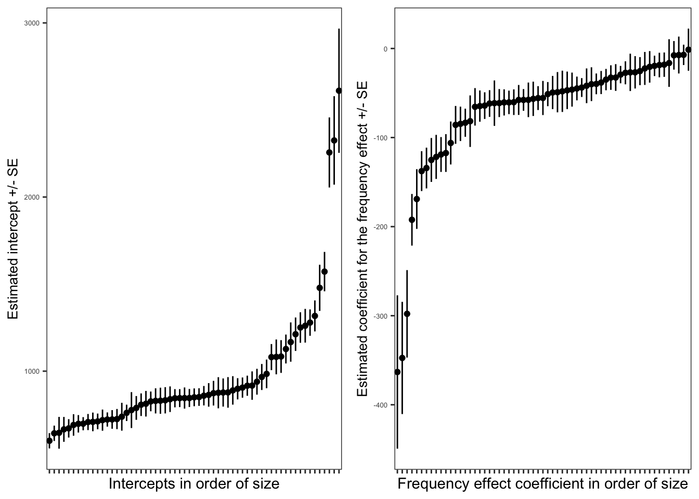
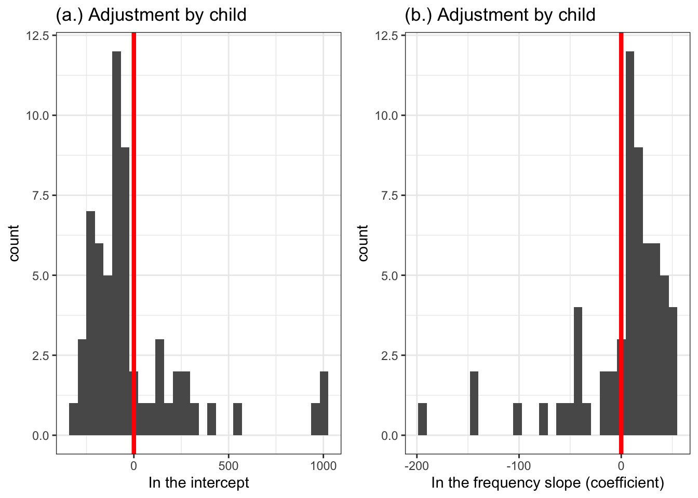
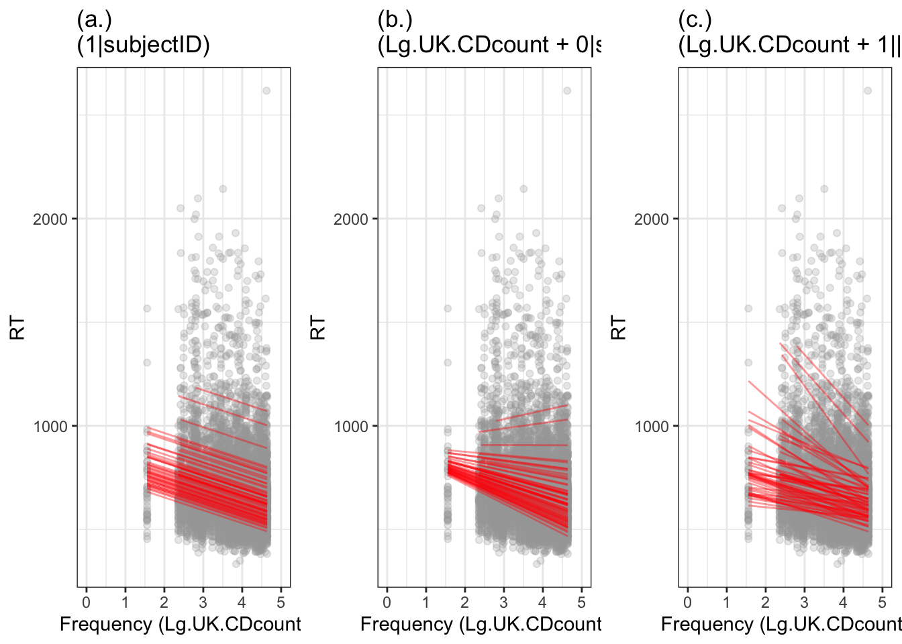

Week 17. Workbook introduction to mixed-effects models
Written by Rob Davies
Week 17 Mixed-effects models workbook overview
Welcome to your overview of the work we will do together in Week 17.
Many Psychologists conduct studies with repeated-measures designs where the experimenter presents a sample of multiple stimuli, for response, to each participant in a sample of multiple participants. Studies with repeated-measures designs will produce data with a structure that requires the use of mixed-effects models.
We use the same procedure we did for multilevel data but with one significant change which we shall explore and seek to understand in-depth.
Targets
Our learning objectives again include the development of both concepts and skills.
skills – practice how to tidy experimental data for mixed-effects analysis.
concepts – begin to develop an understanding of crossed random effects of participants and stimuli.
skills and concepts – practice fitting linear mixed-effects models incorporating random effects of participants and stimuli.
Learning resources
You will see, next, the lectures we share to explain the concepts you will learn about, and the practical data analysis skills you will develop. Then you will see information about the practical materials you can use to build and practise your skills.
Every week, you will learn best if you first watch the lectures then do the practical exercises.
Linked resources
To help your learning, you can read about the ideas and the practical coding required for analyses in the chapters I wrote for this course.
The lecture materials for this week are presented in three short parts.
Click on a link and your browser should open a tab showing the Panopto video for the lecture part.
Part 1 (17 minutes) Mixed-effects models: Repeated measures data and the what, when and how of mixed-effects models.
Part 2 (21 minutes): Working with an example from a study with a repeated measures design, recognizing how people or how stimuli vary, and identifying the motivation for using mixed-effects models, compared to alternative methods.
Part 3 (15 minutes): What mixed-effects models can do for us, how we can describe the logic, how we code mixed-effects models, what the bits of code do, what the results look like, what the results tell us, and how we should report our models and our findings.
Lecture slides
Download the lecture slides
The slides presented in the videos can be downloaded here:
The high resolution version is the version delivered for the lecture recordings. Because the images are produced to be high resolution, the file size is quite big (6 MB) so, to make the slides easier to download, I produced low resolution versions: 1pp and 6pp. These should be easier to download and print out if that is what you want to do.
Practical materials: data and R-Studio
We will be working with the CP reading study data-set. CP tested 62 children (aged 116-151 months) on reading aloud in English. In the experimental reading task, CP presented 160 words as stimuli. The same 160 words were presented to all children. The words were presented one at a time on a computer screen. Each time a word was shown, each child had to read the word out loud and their response was recorded. Thus, the CP reading study data-set comprised observations about the responses made by 62 children to 160 words.
We have an outcome measure – the reading response – observed multiple times.
We have multiple responses recorded for each participant: they make one response to each stimulus (here, each stimulus word), for the multiple stimuli that they see in the experimental reading task.
And we have multiple responses recorded for each stimulus: one response is made to each stimulus by each participant, for all the participants who completed the task, in a sample of multiple participants.
The presence of these features is the reason why we need to use mixed-effects models in our analysis.
Important
Get the data: get the data file and the .R script you can use to do the exercises that will support your learning.
You can download the files folder for this chapter by clicking on the link 02-mixed.zip.
The practical materials folder includes data files and an .R script:
CP study word naming rt 180211.dat
CP study word naming acc 180211.dat
words.items.5 120714 150916.csv
all.subjects 110614-050316-290518.csv
long.all.noNAs.csv
402-02-mixed-workbook.R the workbook you will need to do the practical exercises.
The .dat files are tab delimited files holding behavioural data: the latency or reaction time rt (in milliseconds) and the accuracy acc of response made by each participant to each stimulus.
The .csv files are comma separated values files. The words.items file holds information about the 160 stimulus words presented in the experimental reading (word naming) task. The all.subjects file holds information about the 62 participants who volunteered to take part in the experiment.
In the following, I will describe a series of steps through which we get the data ready for analysis. However, as we shall see, you can avoid these steps by using the pre-tidied data-set:
long.all.noNAs.csv
The data files are collected together through the steps set out in the .R script:
── Conflicts ────────────────────────────────────────── tidyverse_conflicts() ──
✖ dplyr::combine() masks gridExtra::combine()
✖ tidyr::expand() masks Matrix::expand()
✖ dplyr::filter() masks stats::filter()
✖ dplyr::lag() masks stats::lag()
✖ tidyr::pack() masks Matrix::pack()
✖ tidyr::unpack() masks Matrix::unpack()
ℹ Use the conflicted package (<http://conflicted.r-lib.org/>) to force all conflicts to become errors
Practical Part 2: Load the data
Practical Task 2 – Read in the data file we will be using
Read the data files into R:
Code
behaviour.rt <-read_tsv("CP study word naming rt 180211.dat", na ="-999")
Rows: 160 Columns: 62
── Column specification ────────────────────────────────────────────────────────
Delimiter: "\t"
chr (1): item_name
dbl (61): AislingoC, AlexB, AllanaD, AmyR, AndyD, AnnaF, AoifeH, ChloeBergin...
ℹ Use `spec()` to retrieve the full column specification for this data.
ℹ Specify the column types or set `show_col_types = FALSE` to quiet this message.
behaviour.acc <-read_tsv("CP study word naming acc 180211.dat", na ="-999")
Rows: 160 Columns: 62
── Column specification ────────────────────────────────────────────────────────
Delimiter: "\t"
chr (1): item_name
dbl (61): AislingoC, AlexB, AllanaD, AmyR, AndyD, AnnaF, AoifeH, ChloeBergin...
ℹ Use `spec()` to retrieve the full column specification for this data.
ℹ Specify the column types or set `show_col_types = FALSE` to quiet this message.
subjects <-read_csv("all.subjects 110614-050316-290518.csv", na ="-999")
Rows: 62 Columns: 26
── Column specification ────────────────────────────────────────────────────────
Delimiter: ","
chr (12): subjectID, WAIS_blocks, ART_truepos, ART_falsepos, handedness, gen...
dbl (14): age.months, TOWREW_acc, TOWREW_time, TOWRENW_acc, TOWRENW_time, sp...
ℹ Use `spec()` to retrieve the full column specification for this data.
ℹ Specify the column types or set `show_col_types = FALSE` to quiet this message.
words <-read_csv("words.items.5 120714 150916.csv", na ="-999")
Rows: 160 Columns: 50
── Column specification ────────────────────────────────────────────────────────
Delimiter: ","
chr (3): item_name, corteseIMG, corteseAOA
dbl (47): Phono_N, OLD, OLDF, PLD, PLDF, NPhon, NMorph, regularity, Length, ...
ℹ Use `spec()` to retrieve the full column specification for this data.
ℹ Specify the column types or set `show_col_types = FALSE` to quiet this message.
Pract.Q.1. Can you identify the differences between the functions used to read different kinds of data files?
Hint
These different functions respect the different ways in which the .dat and .csv file formats work.
We need read_tsv() when data files consist of tab separated values.
We need read_csv() when data files consist of comma separated values.
You can read more about the {tidyverse}{readr} library of helpful functions here.
It is very common to get experimental data in all sorts of different formats. Learning to use tidyverse functions will make it easier to cope with this when you do research.
Pract.Q.2. Can you explain what the read_ functions are doing, or what you are doing with them when you code them?
Hint
It will help your understanding to examine an example. Take a look at what this line of code includes, element by element.
behaviour.rt <-read_tsv("CP study word naming rt 180211.dat", na ="-999")
We write behaviour.rt <- read_tsv(...) to create an object in the R environment, which we call behaviour.rt: the object with this name is the data-set we read into R using read_tsv(...).
When we write the function read_tsv(...) we include two arguments inside it.
read_tsv("CP study word naming rt 180211.dat", ... first, the name of the file, given in quotes "" and then a comma.
read_tsv(..., na = "-999") second, we tell R that there are some missing values na which are coded with the value "-999".
Practical Part 3: Tidy the data
Tidying the data involves a number of tasks, some essential and some things we do for our convenience.
Practical Task 3 – Transform the rt and acc data from wide to long using pivot_longer()
To get ready for later analyses, we need to ensure that reaction time (rt) and accuracy (acc) observations are in tidy format.
When we first encounter the data files, the data are untidy because, here, the reaction time (rt) and accuracy (acc) observations are in separate multiple columns. We pivot the data to solve this problem.
The name of the function comes from the fact that we are starting with data in wide format e.g. behaviour.rt where we have what should be a single variable of observations (RTs) arranged in a wide series of multiple columns, side-by-side (one column for each participant). But we want to take those wide data and lengthen the data-set, increasing the number of rows and decreasing the number of columns.
Let’s look at this line of code bit by bit.
rt.long <- behaviour.rt %>%
At the start, I tell R that I am going to create a new longer data-set (more rows, fewer columns) that I shall call rt.long.
I will create this longer data-set from <- the original wide data-set behaviour.rt.
and I will create the new longer data-set by taking the original wide data-set and piping it %>% to the pivot function coded on the next line:
On this next line, I tell R how to do the pivoting by using three arguments.
pivot_longer(2:62...)
First, I tell R that I want to re-arrange all the columns that can be found in the data-set from the second column to the sixty-second column.
In a spreadsheet, we have a number of columns.
Columns can be identified by their position in the spreadsheet.
The position of a column in a spreadsheet can be identified by number, from the leftmost column (column number 1) to the rightmost column (here, column number 62) in our data-set.
So this argument tells R exactly which columns I want to pivot.
pivot_longer(..., names_to = "subjectID", ...)
Second, I tell R that I want it to take the column labels and put them into a new column, called subjectID.
In the wide data-set behaviour.rt, each column holds a list of numbers (RTs) but begins with a word in the topmost cell, the name code for a participant, in the column label position.
We want to keep the information about which participant produces which response when we pivot the wide data to a longer structure.
We do this by asking R to take the column labels (the participant names) and listing them in a new column, called subjectID which now holds the names as participant ID codes.
pivot_longer(...values_to = "RT")
Third, we tell R that all the RT values should be put in a single column.
We can understand that this new column RT will hold RT observations in a vertical stack, one cell for each response by a person to a word, with rows ordered by subjectID.
There are 61 columns of data listed by participant though 62 children were tested because we lost one child’s data through an administrative error. As a result, in the wide data sets there are 62 columns, with the first column holding item_name data.
You can find more information about pivoting data here
And you can find more information specifically about the pivot_longer() operation here
Practical Task 4 – Join data from different sources
To answer our research question, we next need to combine the RT with the accuracy data, and then the combined behavioural data with participant information and with stimulus information.
In common practice, in psychological research, we have to deal with the fact that information about behavioural responses, and about participant attributes or stimulus word properties, are located in separate files.
This is a problem where we need, as here, to analyse outcome behavioural responses using information about participant attributes or stimulus word properties.
Pract.Q.4. How do we solve this problem?
Hint
We need to join the data from the different sources:
join RT with accuracy then
join those response data with data about subject attributes
then join those response plus subjects data
with item properties data
We can combine the data-sets, in the way that we need, using the {tidyverse}full_join() function.
First, we join RT and accuracy data together.
Code
long <- rt.long %>%full_join(acc.long)
Then, we join subject and item information to the behavioural data.
Code
long.subjects <- long %>%full_join(subjects, by ="subjectID")long.all <- long.subjects %>%full_join(words, by ="item_name")
Pract.Q.4. Can you explain what you are doing, or what the code you use is doing, to solve the problem of putting the separate sets of data together?
Hint
Here, in a series of steps, we take one data-set and join it (merge it) with the second data-set. Let’s look at an example element by element to better understand how this is accomplished.
long <- rt.long %>%full_join(acc.long)
The code work as follows.
long <- rt.long %>%
We create a new data-set we call long.
We do this by taking one original data-set rt.long and %>% piping it to the operation defined in the second step.
full_join(acc.long)
In this second step, we use the function full_join() to add observations from a second original data-set acc.long to those already from rt.long
The addition of observations from one data-set joining to those from another happens through a matching process.
R looks at the data-sets being merged.
It identifies if the two data-sets have columns in common. Here, the data-sets have subjectID and item_name in common).
R can use these common columns to identify rows of data. Here, each row of data will be identified by both subjectID and item_name i.e. as data about the response made by a participant to a word.
R will then do a series of identity checks, comparing one data-set with the other and, row by row, looking for matching values in the columns that are common to both data-sets.
If there is a match then R joins the corresponding rows of data together.
If there isn’t a match then it creates NAs where there are missing entries in one row for one data-set which cannot be matched to a row from the joining data-set.
Practical Task 5 – Select just the variables we need
If the pivoting and joining steps have gone according to plan then we should now be looking at a big, long and wide, data-set. But we do not actually require all of the data-set for the analyses we are going to do.
For our own convenience, we are going to want to select just the variables we need.
Pract.Q.6. What if you wanted to analyze a different set of variables, could you select different variables?
Practical Task 6 – Filter the observations
The data-set includes missing values, designated NA.
Here, every error (coded 0, in accuracy) corresponds to an NA in the RT column.
The data-set also includes outlier data.
In this context, \(RT < 200\) are probably response errors or equipment failures. We will want to analyse accuracy later, so we shall need to be careful about getting rid of NAs.
Pract.Q.7. How do we exclude NAs and outliers so that we can do our analysis?
Hint
We can exclude two sets of observations:
observations corresponding to correct response reaction times that are too short: \(RT < 200\).
plus observations corresponding to the word false which (because of an Excel formatting problem) dropped item attribute data.
We can do this using the filter() function, setting conditions on rows, as arguments.
Create a new data-set long.all.select.filter <- ... by
Using functions to work on the data named immediately to the right of the assignment arrow: long.all.select
An observation is included in the new data-set if it matches the condition specified as an argument in the filter() function call, thus:
filter(item_name !='FALSE') means: include in the new data-set long.all.select.filter all observations from the old data-set long.all.select that are not != (! not = equal to) the value FALSE in the variable item_name,
then recreate the long.all.select.filter as a version of itself (with no name change) by including in the new version only those observations where RT was greater than or equal to 200ms using RT >= 200.
Pract.Q.9. Do you understand what the difference is between = and ==.
Hint
You need to be careful to distinguish these signs.
= assigns a value, so x = 2 means “x equals 2”
== tests a match so x == 2 means: “is x equal to 2?”
Pract.Q.10. Can you vary the filter conditions: in different ways?
Change the threshold for including RTs from RT >= 200 to something else?
Can you assess what impact the change has? Note that you can count the number of observations (rows) in a data-set using e.g. length(data.set.name$variable.name)??
Practical Task 7 – Remove missing (NA) values
The data-set includes missing values, designated NA. We have not yet dealt with these.
Pract.Q.11. How do you remove missing values?
Hint
We can remove missing values before we go any further, using the na.omit() function.
Code
long.all.noNAs <-na.omit(long.all.select.filter)
Pract.Q.12. Can you explain how the code function works, when we exclude missing NA values?
Hint
The na.omit() function is powerful.
Look at the example code:
long.all.noNAs <-na.omit(long.all.select.filter)
In using this function, I am asking R to create a new data-set long.all.noNAs from the old data-set long.all.select.filter in a process in which the new data-set will have no rows in which there is a missing value NA in any column.
You need to be reasonably sure, when you use this function, where your NAs may be because, otherwise, you may end the process with a new filtered data-set that has many fewer rows in it than you expected.
Practical Part 4: Read in pre-tidied data
We have a learnt in following the process of tidying data, step-by-step.
If we wanted to, we could complete the process, check that what we have done is correct, and then write the final version of the data-set out to a new .csv using the write_csv() function.
write_csv(long.all.noNAs, "long.all.noNAs.csv")
Practical Task 8 – Read in .csv of pre-tidied data
Pract.Q.13. If you want to skip the tidying process steps, assuming you have written the tidied data-set out to a new .csv file, what would you do?
Notice that I am using read_csv() with an additional argument col_types = cols(...).
Here, I am requesting that read_csv() treats subjectID and item_name as factors.
We use col_types = cols(...) to control how read_csv() interprets specific column variables in the data.
Controlling the way that read_csv() handles variables is a very useful capacity, and a more efficient way to work than, say, first reading in the data and then using coercion to ensure that variables are assigned appropriate types.
We begin our data analysis by asking if reading reaction time RT varies in association with the estimated frequency of occurrence in language experience of the words we ask participants to read.
We ignore, at first, the multilevel structure or clustering in the data.
Practical Task 9 – Visualize the relationship between frequency and RT, ignoring participant differences
You need to do three things, here:
Draw a scatterplot.
Remember to map the outcome reaction time variable to the heights of points.
Remember in this data-set, word frequency information is located in the Lg.UK.CDcount variable.
Call:
lm(formula = RT ~ Length, data = long.all.noNAs)
Residuals:
Min 1Q Median 3Q Max
-358.99 -117.89 -39.99 61.17 1944.07
Coefficients:
Estimate Std. Error t value Pr(>|t|)
(Intercept) 600.149 11.734 51.145 < 2e-16 ***
Length 18.369 2.706 6.789 1.2e-11 ***
---
Signif. codes: 0 '***' 0.001 '**' 0.01 '*' 0.05 '.' 0.1 ' ' 1
Residual standard error: 188.5 on 9083 degrees of freedom
Multiple R-squared: 0.005049, Adjusted R-squared: 0.00494
F-statistic: 46.09 on 1 and 9083 DF, p-value: 1.198e-11
Pract.Q.15. What is the estimate of the effect of Length on RT?
Pract.Q.16. What does the estimate tell you about how RT varies in relation to word length?
Pract.Q.17. What is the R-squared for the model?
Change the predictor from frequency to something else: you choose.
Pract.Q.18. Produce a scatterplot to visualize the relationship between the two variables: does the relationship you see in the plot match the coefficient you see in the model estimates?
Hint
You need to look at the model summary to do this. Specifically, you need to think about:
The coefficients for the effect of the predictor variable you include in your model: focus on the sign and the magnitude of the effect coefficient.
Whether or how that sign and that magnitude do or do not match the slopes you see in the plot.
Practical Task 12 – Visualize the relationship between frequency and RT, separately for each participant
Hint
You can Use facet_wrap() to do this.
We can visualize the frequency effect for each child in a grid of plots, with each plot representing the \(\text{RT} \sim \text{frequency}\) relationship for the data for a child (see the lattice or trellis plot, following).
Code
## Code#| label: fig-freqperchildtrellis#| fig-cap: "RT vs. word frequency, considered separately for data for each child"#| fig-alt: "The figure shows a grid of scatterplots. In each plot, each point represents the lexical frequency (on the x-axis) and the reaction time (RT, on the y-axis) of responses made by children to a set of words. A red line is drawn through the points, indicating that RT decreases for higher values of frequency. A different plot is shown to represent the data for each child. Between plots, we can see that the potential association between RT and frequency can vary."#| warning: false#| message: false#| fig-height: 10#| fig-width: 7.5long.all.noNAs %>%ggplot(aes(x = Lg.UK.CDcount, y = RT)) +geom_point(alpha = .2) +geom_smooth(method ="lm", se =FALSE, size =1.25, colour ="red") +theme_bw() +xlab("Word frequency (log10 UK SUBTLEX CD count)") +facet_wrap(~ subjectID)
`geom_smooth()` using formula = 'y ~ x'

Pract.Q.19. Can you visualize the relationship between RT and Length, also, separately for each participant?
Code
## Code#| label: fig-lengthperchildtrellis#| fig-cap: "RT vs. word length, considered separately for data for each child"#| fig-alt: "The figure shows a grid of scatterplots. In each plot, each point represents the word length (on the x-axis) and the reaction time (RT, on the y-axis) of responses made by children to a set of words. A red line is drawn through the points, indicating that RT increases for higher values of length. A different plot is shown to represent the data for each child. Between plots, we can see that the potential association between RT and length can vary."#| warning: false#| message: false#| fig-height: 10#| fig-width: 7.5long.all.noNAs %>%ggplot(aes(x = Length, y = RT)) +geom_point(alpha = .2) +geom_smooth(method ="lm", se =FALSE, size =1.25, colour ="red") +theme_bw() +facet_wrap(~ subjectID)
`geom_smooth()` using formula = 'y ~ x'

Pract.Q.19. What do you conclude from this plot about the Length effect, and about how the effect varies?
Practical Part 6: Analyze data with lmer
Practical Task 13 – Fit a linear mixed-effects model, including the random effect of participants on intercepts and on the slope of the frequency effect
Hint
You need to specify:
the lmer() function;
RT as the outcome;
frequency (Lg.UK.CDcount) as the fixed effects predictor;
plus random effects including the effect of participants (subjectID) on intercepts and on the slopes of the frequency effect (Lg.UK.CDcount).
Linear mixed model fit by REML ['lmerMod']
Formula: RT ~ Lg.UK.CDcount + ((1 | subjectID) + (0 + Lg.UK.CDcount |
subjectID))
Data: long.all.noNAs
REML criterion at convergence: 117805.3
Scaled residuals:
Min 1Q Median 3Q Max
-3.7839 -0.5568 -0.1659 0.3040 12.4850
Random effects:
Groups Name Variance Std.Dev.
subjectID (Intercept) 87575 295.93
subjectID.1 Lg.UK.CDcount 2657 51.55
Residual 23734 154.06
Number of obs: 9085, groups: subjectID, 61
Fixed effects:
Estimate Std. Error t value
(Intercept) 950.913 39.216 24.248
Lg.UK.CDcount -67.980 7.092 -9.586
Correlation of Fixed Effects:
(Intr)
Lg.UK.CDcnt -0.093
Pract.Q.20. What are the differences between the lm() and the lmer() model results?
Practical Task 14 – Fit a linear mixed-effects model, including the random effects of participants on intercepts and on the slope of the frequency effect, as well as the random effect of items on intercepts
Linear mixed model fit by REML ['lmerMod']
Formula: RT ~ Lg.UK.CDcount + ((1 | subjectID) + (0 + Lg.UK.CDcount |
subjectID)) + (1 | item_name)
Data: long.all.noNAs
REML criterion at convergence: 116976.7
Scaled residuals:
Min 1Q Median 3Q Max
-4.1795 -0.5474 -0.1646 0.3058 12.9485
Random effects:
Groups Name Variance Std.Dev.
item_name (Intercept) 3397 58.29
subjectID Lg.UK.CDcount 3624 60.20
subjectID.1 (Intercept) 112314 335.13
Residual 20704 143.89
Number of obs: 9085, groups: item_name, 159; subjectID, 61
Fixed effects:
Estimate Std. Error t value
(Intercept) 971.07 51.87 18.723
Lg.UK.CDcount -72.33 10.79 -6.703
Correlation of Fixed Effects:
(Intr)
Lg.UK.CDcnt -0.388
Pract.Q.21. Can you describe the differences between the models with vs. without the item term?
How do the random effects differ?
How do the fixed effects estimates differ?
Practical Task 15 – Now fit a mixed-effects model for the effect of Length on RT. Include the random effects of participants on intercepts and on the slope of the length effect, as well as the random effect of items on intercepts.
Linear mixed model fit by REML ['lmerMod']
Formula: RT ~ Length + ((1 | subjectID) + (0 + Length | subjectID)) +
(1 | item_name)
Data: long.all.noNAs
REML criterion at convergence: 117114.2
Scaled residuals:
Min 1Q Median 3Q Max
-3.6205 -0.5443 -0.1641 0.3055 12.9620
Random effects:
Groups Name Variance Std.Dev.
item_name (Intercept) 4751.3 68.93
subjectID Length 757.9 27.53
subjectID.1 (Intercept) 4994.3 70.67
Residual 21440.3 146.43
Number of obs: 9085, groups: item_name, 159; subjectID, 61
Fixed effects:
Estimate Std. Error t value
(Intercept) 572.709 35.034 16.347
Length 28.361 8.534 3.323
Correlation of Fixed Effects:
(Intr)
Length -0.867
Pract.Q.22. What are the random effects estimates: the variances?
Pract.Q.23. What is the estimate of the effect of length?
Pract.Q.24. What does the estimate tell you about how RT varies as Length varies?
Practical Part 7: Extension
Reproduce the plots in the chapter and slides
This part is optional for you to view and work with.
Run the code, and consider the code steps only if you are interested in how the materials for the book chapter were created.
Practical Task 15 – Visualize the relationship between frequency and RT, separately for each participant
What we aim to do is:
Model the effect of word frequency for each child, for their data considered separately.
Extract the coefficient estimate for the frequency effect for each separate model (per child).
Then plot these estimates, together with
Can you figure out how to code these steps?
Code
# -- First fit the model for each childfreqperchildlm <- long.all.noNAs %>%group_by(subjectID) %>%do(tidy(lm(RT ~ Lg.UK.CDcount, data=.)))# -- What does freqperchildlm hold: take a look?# -- Make sure you can treat term as a factorfreqperchildlm$term <-as.factor(freqperchildlm$term)# -- Get the intercept and frequency effect estimatesfreqperchildlmint <-filter(freqperchildlm, term =='(Intercept)')freqperchildlmfreq <-filter(freqperchildlm, term =='Lg.UK.CDcount')# -- Make the intercepts plots: order by sizepfreqperchildlmint <- freqperchildlmint %>%ggplot(aes(x =fct_reorder(subjectID, estimate), y = estimate, ymin = estimate - std.error, ymax = estimate + std.error)) +geom_point() +geom_linerange() +theme_bw() +xlab("Intercepts in order of size") +ylab("Estimated intercept +/- SE") +theme(axis.title.y =element_text(size =10), axis.text.y =element_text(size =5), axis.text.x =element_blank(), panel.grid =element_blank())# -- Make the slopes plots: order by sizepfreqperchildlmfreq <- freqperchildlmfreq %>%ggplot(aes(x =fct_reorder(subjectID, estimate), y = estimate, ymin = estimate - std.error, ymax = estimate + std.error)) +geom_point() +geom_linerange() +theme_bw() +xlab("Frequency effect coefficient in order of size") +ylab("Estimated coefficient for the frequency effect +/- SE") +theme(axis.title.y =element_text(size =10), axis.text.y =element_text(size =5), axis.text.x =element_blank(), panel.grid =element_blank())# -- Make a grid to show the plots side by side: in 2 columnsgrid.arrange(pfreqperchildlmint, pfreqperchildlmfreq,ncol =2)

Practical Task 16 – Take the linear mixed-effects model, and plot the model predicted differences in intercepts or slopes
What we aim to do is:
Model the effect of word frequency for all the children, including random effects terms to take into account random differences between children in intercepts or in slopes.
Get the random effects estimates – the between-children differences – and plot them.
Plot the distribution of random effects – usually called conditional modes.
Code
BLUPS <-ranef(lmer.all.1)$subjectID# summary(BLUPS)BLUPS.df <-data.frame(subjectID =rownames(BLUPS), intercepts = BLUPS[,1], frequency = BLUPS[,2])# summary(BLUPS.df)# str(BLUPS.df)p.BLUPS.intercepts <- BLUPS.df %>%ggplot(aes(x = intercepts)) +geom_histogram() +ggtitle("(a.) Adjustment by child") +xlab("In the intercept") +geom_vline(xintercept =0, colour ="red", size =1.5) +theme_bw()p.BLUPS.slopes <- BLUPS.df %>%ggplot(aes(x = frequency)) +geom_histogram() +ggtitle("(b.) Adjustment by child") +xlab("In the frequency slope (coefficient)") +geom_vline(xintercept =0, colour ="red", size =1.5) +theme_bw()grid.arrange(p.BLUPS.intercepts, p.BLUPS.slopes,ncol =2)
`stat_bin()` using `bins = 30`. Pick better value with `binwidth`.
`stat_bin()` using `bins = 30`. Pick better value with `binwidth`.

Practical Task 17 – Fit different kinds of mixed-effects model, then plot the resulting differences in model predictions
What we aim to do is:
Model the effect of word frequency for all the children, including (in different models) different random effects terms to take into account (in different ways) random differences between children in intercepts or in slopes.
Get the random effects estimates – the between-children differences – and plot the model predictions.
Can you figure out how to code these steps?
First, fit the models. We want to compare models with:
Random effects of participants on intercepts and on slopes.
Random effects of participants on intercepts.
Random effects of participants on slopes.
Code
# -- Fit different kinds of mixed-effects model, then plot the resulting differences in model predictionslmer.all.1<-lmer(RT ~ Lg.UK.CDcount + (Lg.UK.CDcount +1||subjectID),data = long.all.noNAs)# summary(lmer.all.1)lmer.all.2<-lmer(RT ~ Lg.UK.CDcount + (1|subjectID),data = long.all.noNAs)# summary(lmer.all.2)lmer.all.3<-lmer(RT ~ Lg.UK.CDcount + (Lg.UK.CDcount +0|subjectID),data = long.all.noNAs)# summary(lmer.all.3)
Then derive predictions of the change in outcome, given variation in predictor values, assuming different random effects structures.
Hint
Plot random effect – per person predictions – following:
In lmer, predict has a re.form argument that specifies which random effects should be included (NA or ~0=none, population level; NULL (=all) or ~subject=prediction at the subject level; more complex models, might have additional nested levels).
Code
# -- get predictionslong.all.noNAs$pred1 <-predict(lmer.all.1) ## individual levellong.all.noNAs$pred2 <-predict(lmer.all.2) ## individual levellong.all.noNAs$pred3 <-predict(lmer.all.3) ## individual level# -- show predictions as slopes on top of raw datap.slopes.intercepts <- long.all.noNAs %>%ggplot(aes(x = Lg.UK.CDcount, y = RT)) +geom_point(alpha = .25, colour ="darkgrey") +geom_line(aes(y = pred1, group = subjectID), colour="red", alpha = .4) +ggtitle("(c.)\n(Lg.UK.CDcount + 1||subjectID)") +xlab("Frequency (Lg.UK.CDcount)") +xlim(0,5) +theme_bw()p.intercepts <- long.all.noNAs %>%ggplot(aes(x = Lg.UK.CDcount, y = RT)) +geom_point(alpha = .25, colour ="darkgrey") +geom_line(aes(y = pred2, group = subjectID), colour="red", alpha = .4) +ggtitle("(a.)\n(1|subjectID)") +xlab("Frequency (Lg.UK.CDcount)") +xlim(0,5) +theme_bw()p.slopes <- long.all.noNAs %>%ggplot(aes(x = Lg.UK.CDcount, y = RT)) +geom_point(alpha = .25, colour ="darkgrey") +geom_line(aes(y = pred3, group = subjectID), colour="red", alpha = .4) +ggtitle("(b.)\n(Lg.UK.CDcount + 0|subjectID)") +xlab("Frequency (Lg.UK.CDcount)") +xlim(0,5) +theme_bw()grid.arrange(p.intercepts, p.slopes, p.slopes.intercepts, ncol =3)

Practical Task 18 – Visualize the variation between items in intercepts – for each itemname, plots ordered by meanRT
What we aim to do is:
Create a model for each item, including just the intercept.
Plot intercepts by-items – ordering items by item_name by estimated intercept size.
Can you figure out how to code these steps?
First, create a model for each item, including just the intercept.